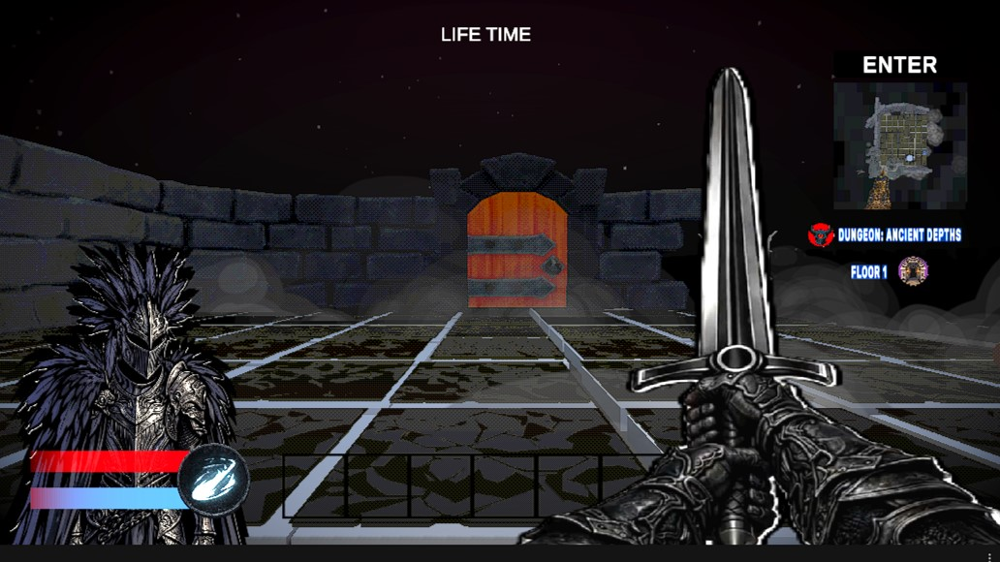
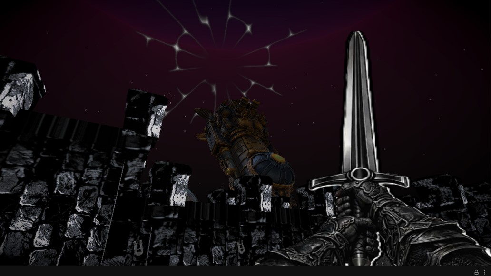
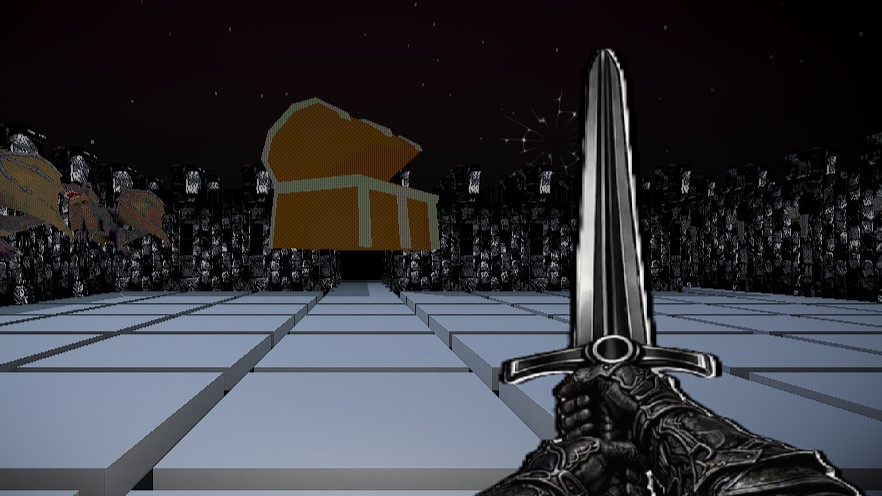
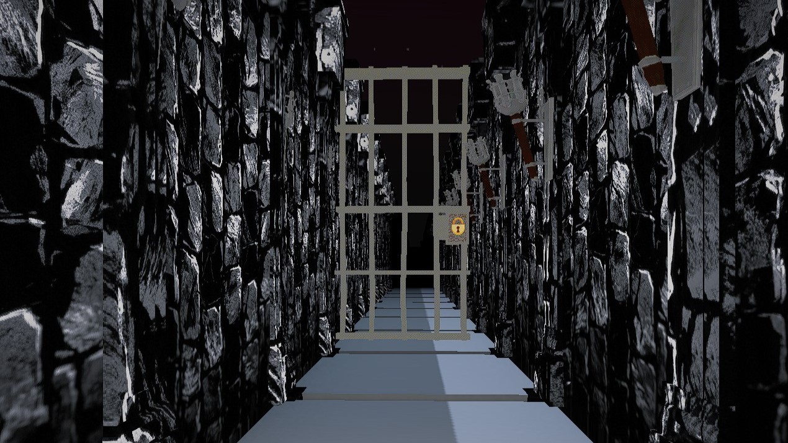
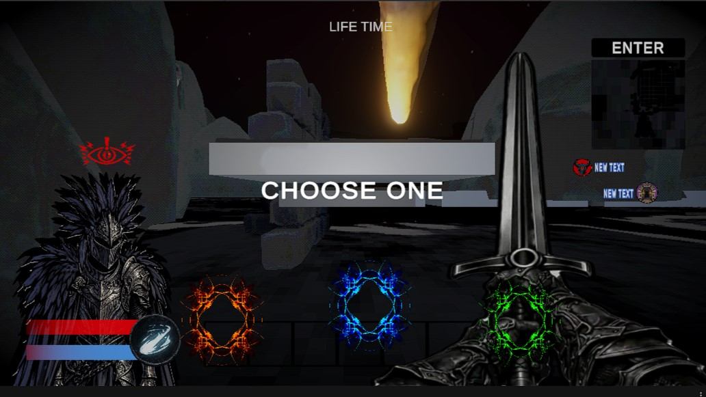
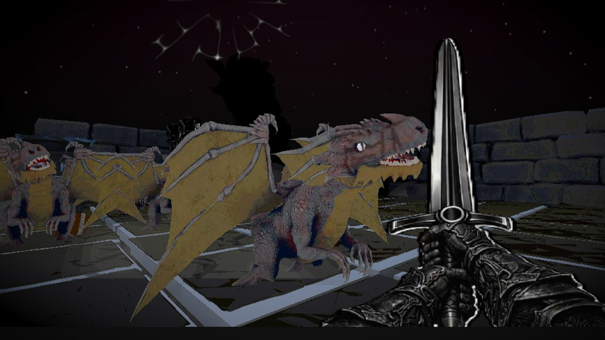

El inicio de un ambicioso proyecto 3D basado en mis dungeon crawlers móviles favoritos. Desarrollado (en simultáneo con UTOPIA) para la Dungeon Crawler Jam 2026, donde se mantuvo en el Top 10 de popularidad gracias a su llamativo estilo visual, a pesar de sus bugs de pre-lanzamiento.





